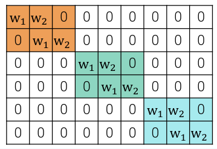
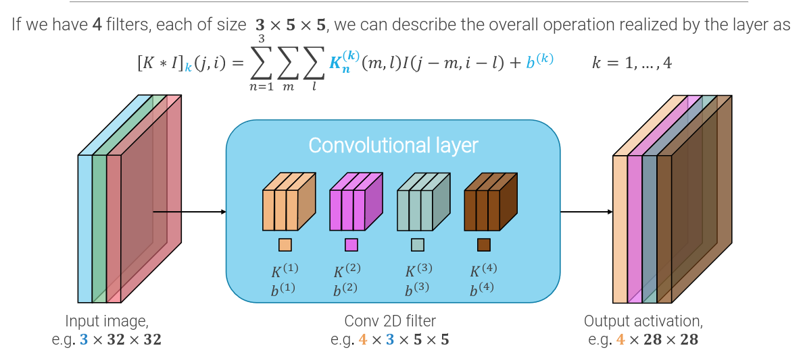

Deep learning in computer vision
A lot of deep learning applications were born to solve computer vision processes.
Here is a recap of what we need in computer vision (and for the exam) to deal with deep learning:
Softmax function
Cross-entropy loss
Bag of words in Computer vision
Given an image, we would like to represent it as a histogram, counting the frequency of appearance of every (code)word from a dictionary.
To compute the "words" we can:
- use a regular grid of positions at several scales
- running a detector of keypoints
then:
- use a patch around the keypoint
- run a SIFT descriptor to define a descriptor
- compute some color descriptor, e.g. mean and variance of sub-patches in R, G and B channels
Then, we create the codebook by Clustering of extracted patches or descriptors in a finite set of centroids creates the codebook. Usually simple k-means clustering is used.
Then, given an image, we repeat the same process and assign each patch to the nearest centroid in the codeboock
We, then for each class, compute an histogram of where the patch of the images representing int lies and we use those histograms as a classifier.
Deep Convolution
Convolution can be interpreted as matrix multiplication, if we reshape inputs and outputs. The resulting matrix is still a linear operator, which:
- shares parameters across its rows
- is sparse, i.e. each output unit is connected only to a small set of neighboring input entries
- seamlessly adapts to varying input sizes
- is equivariant to translations of the input, i.e. translation of the output of the convolution is equivalent to computation of the convolution on the translated input
 
A generic convolutional layer has parameters where:
- is the depth of the output activation
- is the depth of the input activation
- and are the height and width of the kernel
- 1 for the bias
The flop represents the number of operations needed to compute the output of the convolution, and it is given by: and, dropping the "2" we get the MACs